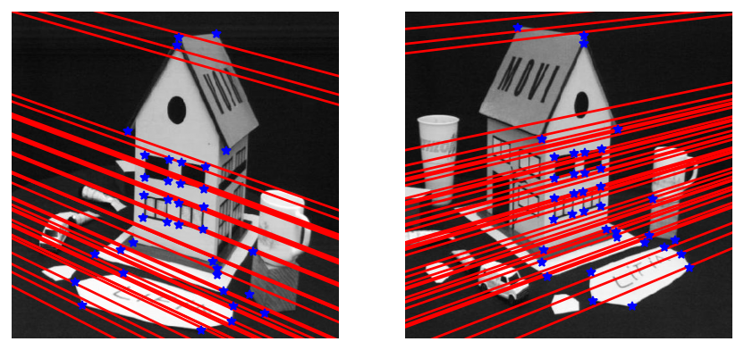
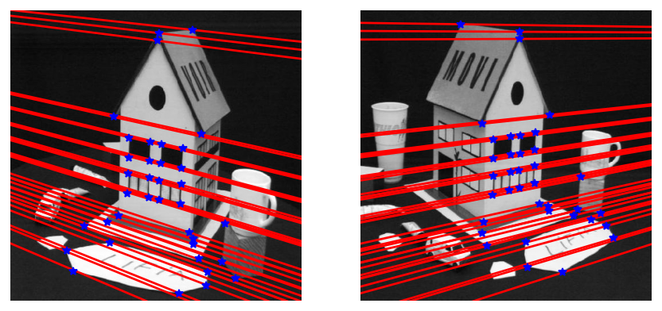
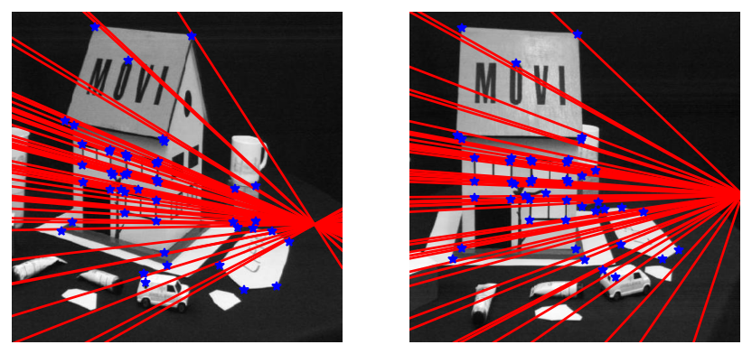
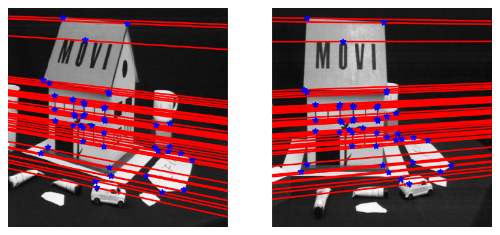
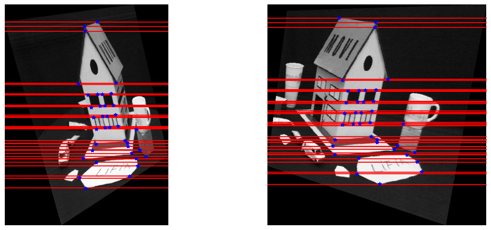
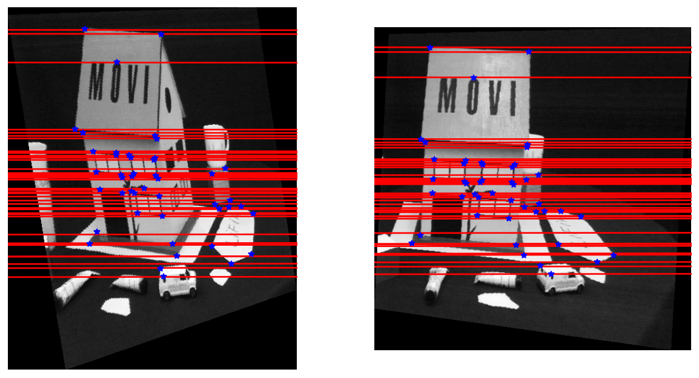
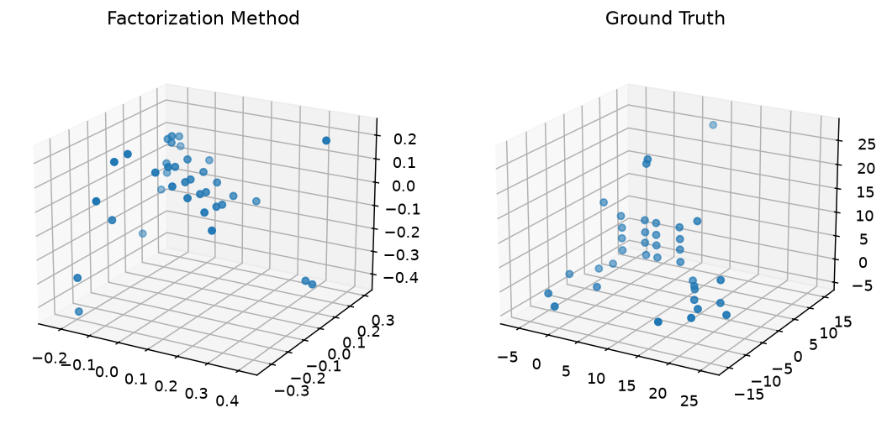
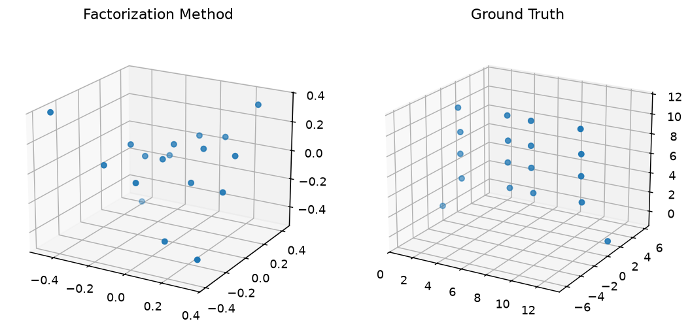
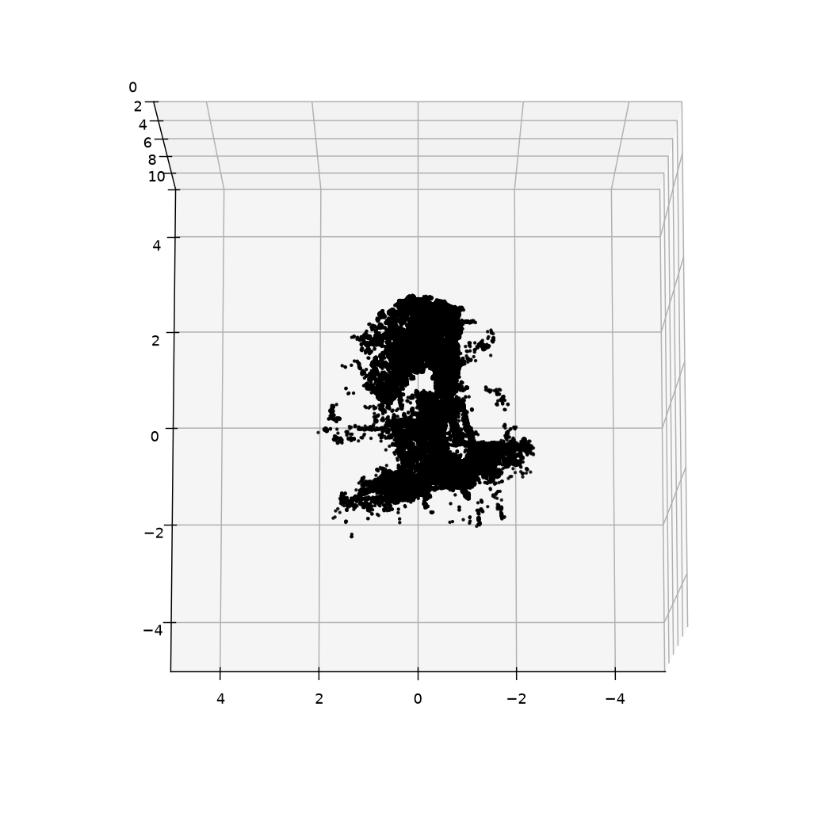
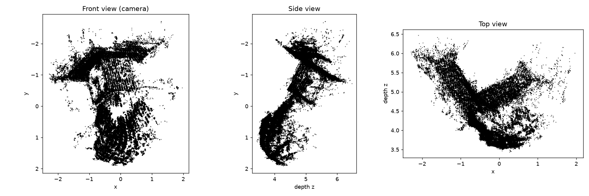

SYDE 671 · Introduction to Computer Vision · Assignment 4
Epipolar Geometry and Structure from Motion
Eight-point algorithm, rectification, Tomasi–Kanade factorization, and projective triangulation (borrowed from Stanford CS231A)
Abstract—Part 1 estimates the fundamental matrix from point correspondences with the linear least-squares eight-point algorithm and its normalized version. On the two supplied image pairs the normalized algorithm brings the mean distance from a point to its epipolar line down from 28.0 and 25.2 px (set 1, images 1 and 2) and 9.7 and 14.6 px (set 2) to 0.83–0.89 px. Part 2 uses the fundamental matrix to compute epipoles and a matching pair of rectifying homographies; after rectification the matched points of both pairs lie on the same row to within a mean of 0.9 px. Part 3 recovers affine structure from two views by factorizing the centred measurement matrix; the full set reproduces the ground truth up to an affine map (RMSE 1.06 on a 25–36 unit extent), and a subset whose points are nearly coplanar shows why the third and fourth singular values then become comparable (7.2 and 5.1). Part 4 implements the projective pipeline: the four candidate (R, T) pairs from the essential matrix, DLT triangulation, reprojection error with its Jacobian, ten Gauss–Newton iterations, and a positive-depth test that selects the correct pair. All starter-code checks agree, and the full pipeline reconstructs 66,385 dense points of a statue from five photographs in about 21 s.
Index Terms—fundamental matrix, eight-point algorithm, epipolar geometry, image rectification, factorization, essential matrix, triangulation, Gauss–Newton, structure from motion.
Scope. The assignment supplies starter code and all of its data (image pairs, point correspondences, ground-truth 3D points, and a precomputed statue sequence), so no photographs were taken for this assignment. I filled in every TODO in p1.py, p2.py, p3.py and p4.py. All code uses NumPy only for the linear algebra, with SciPy and scikit-image used by the provided utilities. Throughout, the fundamental matrix follows the starter convention p′TFp = 0, where p is a point in image 1 and p′ its match in image 2. Small driver scripts (run_p1.py to run_p4_views.py) save the numbers and figures shown here.
Part 1: Fundamental Matrix Estimation
1(a, b) Linear least-squares eight-point algorithm
Implementation. Each correspondence gives one linear equation in the nine entries of F. With p = (u, v, 1) and p′ = (u′, v′, 1), the row is the Kronecker product of p′ and p, and stacking all rows gives A f = 0. The solution is the right singular vector of A with the smallest singular value, reshaped to 3×3. Because a true fundamental matrix has rank two, a second SVD of F sets its smallest singular value to zero and recomposes it. Both returned matrices have numerical rank 2.
def lls_eight_point_alg(points1, points2):
# each correspondence gives one row of A f = 0, with f = vec(F) row-major
# (points2)^T F (points1) = 0 -> row = kron(p2, p1) = [u'u u'v u' v'u v'v v' u v 1]
A = np.stack([np.kron(p2, p1) for p1, p2 in zip(points1, points2)])
# f = right singular vector of the smallest singular value
_, _, Vt = np.linalg.svd(A)
F = Vt[-1].reshape(3, 3)
# enforce rank 2 by zeroing the smallest singular value
U, S, Vt = np.linalg.svd(F)
S[2] = 0
return U @ np.diag(S) @ VtThe resulting matrices are given in scientific notation because the entries range from about 10-7 to 1, so fixed four-decimal output would show most of them as 0.0000. F is only defined up to scale; this one has unit Frobenius norm before rank enforcement.
Set 1, LLS:
| 1.5522e-06 | -8.1816e-06 | -1.5044e-03 |
| -5.8700e-06 | -3.0289e-07 | -1.1361e-02 |
| -3.5231e-03 | 1.4145e-02 | 9.9983e-01 |
Set 2, LLS:
| -5.6309e-06 | 2.7498e-05 | -6.4265e-03 |
| -2.7762e-05 | -6.7475e-06 | 1.5218e-02 |
| 1.0762e-02 | -1.2252e-02 | -9.9973e-01 |
1(c, d) Normalized eight-point algorithm
Implementation. Pixel coordinates are in the hundreds, so the columns of A differ by about five orders of magnitude (products such as uu′ against the constant 1) and the smallest singular vector is poorly conditioned. I therefore translate each point set so its centroid is at the origin and scale it so the mean distance from the origin is √2, using a similarity matrix T per image. The same linear algorithm (including rank enforcement) runs on the normalized points to give Fn, and the result is converted back with F = T′T Fn T.
def normalized_eight_point_alg(points1, points2):
def normalize(pts):
# translate centroid to origin, scale so mean distance is sqrt(2)
mean = pts[:, :2].mean(axis=0)
d = np.linalg.norm(pts[:, :2] - mean, axis=1).mean()
s = np.sqrt(2) / d
T = np.array([[s, 0, -s * mean[0]],
[0, s, -s * mean[1]],
[0, 0, 1]])
return (T @ pts.T).T, T
q1, T1 = normalize(points1)
q2, T2 = normalize(points2)
Fn = lls_eight_point_alg(q1, q2)
# undo normalization: q2^T Fn q1 = p2^T (T2^T Fn T1) p1
return T2.T @ Fn @ T1Set 1, normalized:
| 7.6956e-07 | -6.2866e-06 | 1.0418e-04 |
| -5.7877e-06 | -4.0113e-07 | -7.5858e-03 |
| -1.0101e-03 | 1.0418e-02 | 1.7226e-01 |
Set 2, normalized:
| -1.7626e-07 | 2.9350e-06 | -1.8214e-04 |
| 4.2339e-06 | 3.7503e-07 | 8.1899e-03 |
| 2.7582e-04 | -9.9428e-03 | -2.9430e-03 |
1(e, f) Distance to epipolar lines
Implementation. For a point p in image 1 with match p′, the epipolar line in image 1 is l = FTp′ = (a, b, c). The distance from p to it is |l·p| / √(a2 + b2), and the function returns the mean over all points. The image-2 value is the same call with the points and FT swapped.
def compute_distance_to_epipolar_lines(points1, points2, F):
# epipolar line in image 1 for each point of image 2: l = F^T p2
lines = (F.T @ points2.T).T
num = np.abs(np.sum(lines * points1, axis=1))
den = np.sqrt(lines[:, 0]**2 + lines[:, 1]**2)
return np.mean(num / den)| Image set | LLS, image 1 | LLS, image 2 | Normalized, image 1 | Normalized, image 2 |
|---|---|---|---|---|
| Set 1 (37 points) | 28.03 | 25.16 | 0.89 | 0.83 |
| Set 2 | 9.70 | 14.57 | 0.89 | 0.89 |
Normalization cuts the error by more than an order of magnitude on set 1 and about 11–16 times on set 2, without any other change to the algorithm. The plots show the same effect: with the plain algorithm the lines miss many points by tens of pixels, whereas with the normalized one they pass through or very near each blue star.








Part 2: Matching Homographies for Image Rectification
2(a) Epipole
Since FTe = 0, the epipole is the null vector of FT: the right singular vector of FT for the smallest singular value, divided by its last coordinate. With this convention compute_epipole(F) gives the epipole in image 2 and compute_epipole(F.T) the one in image 1, as the starter main assumes.
def compute_epipole(F):
# F^T e = 0: e is the right singular vector of F^T with smallest singular value
_, _, Vt = np.linalg.svd(F.T)
e = Vt[-1]
return e / e[2]For set 1 the epipoles are e1 = (−1300.8, −142.7) and e2 = (1654.2, 45.4); for set 2 they are (−1929.6, −53.8) and (3378.1, 75.5). All lie far outside the 512×512 images, which suggests the camera motion is roughly a sideways translation, so the epipolar lines are already fairly close to horizontal.
2(b) Sending the epipole to infinity
As in the handout, H is built in four steps: translate the image centre to the origin (T); rotate the translated epipole onto the x-axis at (f, 0, 1) (R, with α = ±1 for the sign of e1); apply G to send (f, 0, 1) to (f, 0, 0); and move back with T-1. The product is H = T-1GRT.
def compute_H(e, im):
h, w = im.shape[:2]
# 1. translate image centre to the origin
T = np.array([[1, 0, -w / 2.0],
[0, 1, -h / 2.0],
[0, 0, 1]])
e1, e2, _ = T @ e
# 2. rotate the translated epipole onto the x-axis at (f, 0, 1)
alpha = 1.0 if e1 >= 0 else -1.0
d = np.hypot(e1, e2)
R = np.array([[alpha * e1 / d, alpha * e2 / d, 0],
[-alpha * e2 / d, alpha * e1 / d, 0],
[0, 0, 1]])
f = alpha * d
# 3. send (f, 0, 1) to (f, 0, 0), i.e. infinity along the horizontal axis
G = np.array([[1, 0, 0],
[0, 1, 0],
[-1.0 / f, 0, 1]])
# 4. move back to the image frame
return np.linalg.inv(T) @ G @ R @ TAs a check, the transformed epipole H2e2 has a third coordinate of about 10-16 and a second coordinate of about 10-14 relative to a first coordinate of order 103, so it is the point at infinity along the horizontal axis.
2(c) Matching homographies
H2 comes from compute_H. To find a matching H1 = HAH2M, I form M = [e]×F + evT with v = (1, 1, 1) (any v keeps F = [e]×M). With the matches transformed to p̂1 = H2Mp1 and p̂2 = H2p2 (both normalized to a last coordinate of 1), the least-squares problem Wa = b has the rows of W equal to p̂1 and b equal to the x-coordinates of p̂2. The solution a fills the first row of HA; the other two rows are those of the identity.
def compute_matching_homographies(e2, F, im2, points1, points2):
H2 = compute_H(e2, im2)
# M = [e]_x F + e v^T (v arbitrary, so that F = [e]_x M)
ex = np.array([[0, -e2[2], e2[1]],
[e2[2], 0, -e2[0]],
[-e2[1], e2[0], 0]])
v = np.ones(3)
M = ex @ F + np.outer(e2, v)
# least squares: choose HA (x-direction affine part) so H1 p1 matches H2 p2
p1_hat = (H2 @ M @ points1.T)
p1_hat /= p1_hat[2]
p2_hat = (H2 @ points2.T)
p2_hat /= p2_hat[2]
W = p1_hat.T # N x 3
b = p2_hat[0] # x-coordinates of the target points
a, *_ = np.linalg.lstsq(W, b, rcond=None)
HA = np.array([[a[0], a[1], a[2]],
[0, 1, 0],
[0, 0, 1]])
H1 = HA @ H2 @ M
return H1, H2| Set | Mean |Δy| | Max |Δy| |
|---|---|---|
| Set 1 | 0.86 | 3.87 |
| Set 2 | 0.88 | 4.18 |
2(d) Rectified images


main only runs set 1; I ran both.Why rectification helps. In the original pair the match of a point lies somewhere along a slanted epipolar line, so a correspondence search is two-dimensional unless F is used to constrain it. After rectification the epipolar lines are the image rows, so the match of a point is on the same row of the other image. The search becomes one-dimensional along a scanline, which is faster, has fewer false candidates, and lets a dense method such as stereo block matching compare windows along a row.
The set 2 images are stored as three-channel colour whereas set 1 is grayscale, and the provided compute_rectified_image expects a single channel, so my driver converts set 2 to grayscale first.
Part 3: The Factorization Method
3(a, b) Implementation
The measurements are stacked into a 4×N matrix D whose rows are x1, y1, x2, y2. Subtracting each row’s mean removes the unknown translation, so for affine cameras D = MS with M a 4×3 motion matrix and S a 3×N structure matrix, and D has rank at most 3. An SVD D = UΣVT is truncated to rank 3: the motion is U:,1:3Σ1:3 and the structure is the first three rows of VT.
def factorization_method(points_im1, points_im2):
# measurement matrix D (4 x N): rows are x1, y1, x2, y2
D = np.vstack([points_im1[:, :2].T, points_im2[:, :2].T])
# remove the per-row mean (translation) so D = M S for a purely linear affine camera
D = D - D.mean(axis=1, keepdims=True)
U, S, Vt = np.linalg.svd(D, full_matrices=False)
# rank-3 truncation: motion (4 x 3) and structure (3 x N); singular values
# are put in the motion matrix, as in the course notes
motion = U[:, :3] @ np.diag(S[:3])
structure = Vt[:3, :]
return structure, motion3(c, d) Full correspondence set

Comparison. The recovered shape has the same arrangement as the ground truth, but its axes are on a different scale (of order 0.4 against tens of units) and it is rotated. This is expected: from two affine views the factorization is only determined up to an invertible 3×3 matrix, since MS = (MA)(A-1S) for any such A, and the SVD simply picks one. As a check I fitted the best affine map from my structure to the ground truth; the residual RMSE is 1.06 on a point cloud whose extent is 27.2, 36.2 and 24.7 units along the three axes. Resolving the ambiguity to a rotation and scale (a metric reconstruction) needs extra constraints on the camera, which the assignment does not ask for.
| Run | σ1 | σ2 | σ3 | σ4 |
|---|---|---|---|---|
| Full set (N = 37) | 959.6 | 540.5 | 184.4 | 27.9 |
| Subset (N = 18) | 264.5 | 210.1 | 7.2 | 5.1 |
Why four values, and why the fourth is not zero. D is 4×N, so its SVD always has four singular values (all four are nonzero in practice). For an idealized affine camera and noise-free measurements D has rank exactly 3, so I would expect three nonzero singular values and a fourth equal to zero. Here the fourth value is 27.9, small relative to σ3 = 184.4 but not zero. It reflects noise in the point locations together with the fact that real cameras are perspective rather than exactly affine. The rank-3 truncation discards it.
3(e, f) Subset of correspondences

With the subset, the reconstruction no longer resembles the ground truth. Looking at the subset’s ground-truth coordinates shows why: the points are nearly coplanar. Their y-values span only 0.35 units (all between about −0.35 and 0), against 13.7 and 10.6 for x and z; they form a flat grid on one face of the object. A planar point set has an essentially two-dimensional structure, so D is close to rank 2 and the third structure direction is determined by noise rather than by geometry. That direction is therefore arbitrary, and rotating the reconstruction shows points in the wrong depth positions.
The singular values agree with this. σ1 and σ2 stay large (264.5 and 210.1), but σ3 falls from 184.4 to 7.2 and becomes comparable to σ4 = 5.1. When a third singular value is not separated from the noise floor, the rank-3 assumption carries no more information than rank 2. The best affine fit of the subset to its ground truth is tight (RMSE 0.12), but that is because the ground truth itself is almost flat. The fit therefore says little about whether the depth was recovered.
Part 4: Triangulation in Structure from Motion
4(a) Four candidate (R, T) pairs
From the SVD E = UΣVT I form Q = UWVT or UWTVT with W = [[0, −1, 0], [1, 0, 0], [0, 0, 1]]. Q is only guaranteed to be orthogonal, so the rotation is R = det(Q)Q. The translation is ±u3, the third column of U. The two rotations and two signs make four pairs.
def estimate_initial_RT(E):
U, _, Vt = np.linalg.svd(E)
W = np.array([[0, -1, 0],
[1, 0, 0],
[0, 0, 1]], dtype=float)
u3 = U[:, 2]
RT = np.zeros((4, 3, 4))
i = 0
for Q in (U @ W @ Vt, U @ W.T @ Vt):
# Q is only guaranteed orthogonal; multiplying by det(Q) makes it a proper rotation
R = np.linalg.det(Q) * Q
for T in (u3, -u3):
RT[i, :, :3] = R
RT[i, :, 3] = T
i += 1
return RTThe third of the four estimates is identical (to four decimals) to the example (R, T) provided in the starter code, as required. The first two have a rotation with a negative second and third diagonal entry, i.e. roughly a 180° rotation about the baseline, the usual alternative solution.
4(b) Linear triangulation
For each image i with camera matrix Mi and measured point (x, y), the constraints x(m3·P) − m1·P = 0 and y(m3·P) − m2·P = 0 give two rows. Stacking them over all images gives a 2K×4 matrix whose smallest right singular vector is the homogeneous 3D point; dividing by its fourth coordinate gives P. On the starter unit test the sum of absolute differences from the expected point is 0.0029. That is small, but larger than the four-decimal rounding of the reference values would explain, and I did not track down the source of the gap.
def linear_estimate_3d_point(image_points, camera_matrices):
rows = []
for p, M in zip(image_points, camera_matrices):
# x * (m3 . P) - (m1 . P) = 0 and y * (m3 . P) - (m2 . P) = 0
rows.append(p[0] * M[2] - M[0])
rows.append(p[1] * M[2] - M[1])
A = np.array(rows)
_, _, Vt = np.linalg.svd(A)
P = Vt[-1]
return P[:3] / P[3]4(c) Reprojection error and Jacobian
The error for image i is ei = p′ − pi, where p′ = (y1/y3, y2/y3) and y = MiP. The Jacobian follows from the quotient rule: ∂(y1/y3)/∂P = (m1y3 − y1m3)/y32, using only the first three columns of Mi, and likewise for the second row. Both functions match the starter reference values: the error differs by 8.3×10-7 and the Jacobian by 1.8×10-8 (sums of absolute differences).
def reprojection_error(point_3d, image_points, camera_matrices):
P = np.append(point_3d, 1.0)
errors = []
for p, M in zip(image_points, camera_matrices):
y = M @ P
errors.extend(y[:2] / y[2] - p[:2])
return np.array(errors)def jacobian(point_3d, camera_matrices):
P = np.append(point_3d, 1.0)
J = np.zeros((2 * len(camera_matrices), 3))
for k, M in enumerate(camera_matrices):
y = M @ P
# quotient rule on (y1/y3, y2/y3) w.r.t. the 3 spatial coordinates
J[2 * k] = (M[0, :3] * y[2] - y[0] * M[2, :3]) / y[2] ** 2
J[2 * k + 1] = (M[1, :3] * y[2] - y[1] * M[2, :3]) / y[2] ** 2
return J4(d) Gauss–Newton
Starting from the linear estimate, I run ten iterations of P ← P − (JTJ)-1JTe, with no early stopping, as specified. On the starter’s multi-view test the norm of the reprojection error falls from 98.74 for the linear estimate to 95.59 for the Gauss–Newton estimate. The improvement is modest, but the nonlinear estimate is lower, as the check requires.
def nonlinear_estimate_3d_point(image_points, camera_matrices):
P = linear_estimate_3d_point(image_points, camera_matrices)
for _ in range(10):
e = reprojection_error(P, image_points, camera_matrices)
J = jacobian(P, camera_matrices)
P = P - np.linalg.inv(J.T @ J) @ J.T @ e
return P4(e) Choosing the correct (R, T)
For each of the four candidates I build the cameras K[I | 0] and K[R | T], triangulate every correspondence with the linear estimate, and count the points whose depth is positive in both camera frames. The depth in the first camera is the z-coordinate of the point; for the second, the point is first transformed by [R | T]. The candidate with the most points in front of both cameras wins. On the starter test this returns exactly the example (R, T) given in the handout.
def estimate_RT_from_E(E, image_points, K):
candidates = estimate_initial_RT(E)
cam0 = K @ np.hstack((np.eye(3), np.zeros((3, 1))))
best, best_count = None, -1
for RT in candidates:
cams = np.stack([cam0, K @ RT])
count = 0
for pts in image_points:
P = linear_estimate_3d_point(pts, cams)
z1 = P[2] # depth in camera 1 frame
z2 = (RT @ np.append(P, 1.0))[2] # depth in camera 2 frame
count += int(z1 > 0 and z2 > 0)
if count > best_count:
best, best_count = RT, count
return best4(f) Full pipeline and the statue reconstruction
With run_pipeline = True the starter code estimates the camera motion for the five statue photographs with bundle adjustment, merges the frames, and triangulates the dense matches with my nonlinear_estimate_3d_point. The provided loop uses the first three image pairs and produces 66,385 3D points (29,189 + 20,932 + 16,264). The whole script, including the unit tests, runs in about 21 s on this machine. The provided dense-match file also contains a fourth set of 114,612 matches that the loop does not use.


The cloud is dense and has real depth structure: the side view is a slanted band and the top view is a wedge, consistent with two surfaces meeting at an angle. It also contains scattered outlier points, because the starter code keeps every triangulated point (the use_point mask is all true). I cannot compare it to a ground truth, since none is provided for this sequence, and the statue is not easy to recognise from the single starter viewpoint.
Why a house is harder than the statue.
- Visibility and occlusion. The statue is a compact object that all cameras see from the front. A house has walls, a roof and interior that no single viewpoint sees together, so any point appears in only some images and the images that overlap share fewer correspondences.
- Camera motion. Covering a house means moving around or through it, so the baselines are large and the views differ strongly. Matching across such wide changes is harder, and the camera pose of each new view has to be chained from the previous ones, so errors accumulate (drift) and need global bundle adjustment.
- Texture and structure. Large flat or repetitive surfaces (plain walls, windows, tiles) give few distinctive features and many false matches.
- Depth range and scale. A scene with near and far parts has a wide range of depths, so triangulation accuracy varies a lot, and far points with small parallax are poorly constrained.
- Cost. More images and points make the pipeline much heavier; this Python implementation took 21 s for five images.
Limitations
- The two-view affine factorization in Part 3 stops at an affine reconstruction; I did not impose the metric constraints that would reduce it to a rotation and scale.
- The statement that the Part 3 subset is nearly coplanar comes from its ground-truth coordinates (y spans 0.35 units). I did not investigate how the subset was chosen.
- Parts 1 and 2 are evaluated only on the two supplied image pairs. Part 4 is checked against the starter’s unit tests and visual plausibility, not against ground truth.
- The reconstruction keeps outliers (no filtering of triangulated points) because the provided pipeline does not filter them. The reported 66,385 points therefore include some bad ones.
- I changed the starter
p4.pyonly to replace a call removed from current Matplotlib (fig.gca(projection='3d')tofig.add_subplot(projection='3d')) and to save the figure and the points to disk.
Files and Credits
From the code/ folder run python run_p1.py, python run_p2.py, python run_p3.py, python p4.py and then python run_p4_views.py. Numbers and figures are written to outputs/; the web copies of the figures are in media/. The starter files epipolar_utils.py and sfm_utils.py and the contents of code/data/ are the course-supplied versions, unmodified.
- R. Hartley and A. Zisserman, Multiple View Geometry in Computer Vision, 2nd ed., Cambridge University Press, 2004 (eight-point algorithm, rectification).
- C. Tomasi and T. Kanade, “Shape and Motion from Image Streams under Orthography: A Factorization Method”, IJCV 1992.
- Stanford CS231A, Computer Vision: From 3D Perception to 3D Reconstruction and Beyond, assignment from which this one is borrowed.